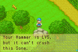
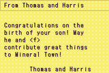

Abaixo esta listado algumas imagens documentadas hilarias mostrando o quao dificil e traduzir um jogo do Japones para o Ingles. Contanto que e dificil, tem erros de gramaticas escondidos em algum lugar dos jogos. No caso de FomT, os erros nao estao escondidos. Tem muitos pequenos problemas no jogo no ocidente.
hing... errr... o que? |
SUNDAY SUNDAY SUNDAY! / DOMINGO DOMINGO DOMINGO! |
I don't want anythign else... / Eu nao quero nd mis (grafia errada) |
I need to ready a book / Eu preciso estar pronto para ler um livro |
ed up. I'm really mess / ed up. Estou confuso |
Every day is Anna's birthday / Todo dia e aniversario de Anna |
What is my name anyway? / Qual e o meu nome mesmo? |
It 'tis I, Sir Butter! / isto senhor manteiga! |
Il y a un défaut... / ? |
I'll have a violet please / Eu quero uma violeta por favor |
Barley dear, that's Cow Feed... / Barley querido, Aquele e a comida da vaca |
Carter speaks in German / Padre Carter fala em Alemao |
Manna runs the Winery / Manna e dona da Vinicola |
That Sopha looks relaxing / Este "Sopha" parece relaxante |
Where's the X-Wool? / Onde esta a X-la? |
Barley dear, that's a Sheep... / Barley querido, aquela ovelha... |
Topaz is a Ruby or a Topaz? / Topazio e uma Ruby ou um Topazio |
Lillia has a new name / Lillia tem um novo nome |
|  Soneday I will crush it / Algun (erro de grafia) dia eu quebrarei |
FEAR THE FISHERMAN! / TEMA O PESCADOR! |
 I think [f] is my wife? / Eu acho que [f] e minha esposa? |
I don't know my name!! / Eu nao sei meu nome!! |
Barley is barely there. / Barley esta mal aqui |
When the husband's away.... / Quando o marido esta fora... |
Zack, do you speak English? / Zack voce fala ingles? |